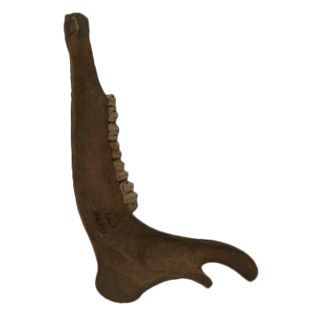
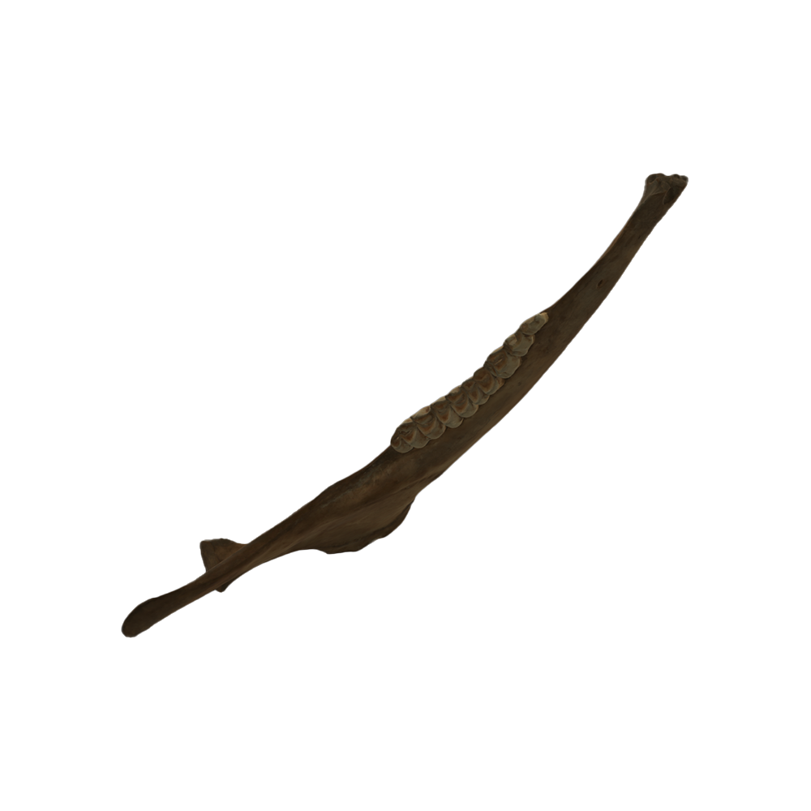

Logo

Mandible Featured Content
Mandible Introduction
Mandible
12.05cm

Material: Deer Bone
Mandible Origin Story
Everything is put to good use
Deer was a major resource for the inhabitants of the Lawson site and very little of it was put to waste. Teeth, such as the ones in this mandible, are made of tough material that makes them strong, durable tools that stand up well to repetitive work.
Mandible Feature Content
A multi-purpose tool

Lower jawbones like this one could be repurposed as scrapers that would be used in tasks like shelling corn or processing leather and hide. Other bones, like the shoulder blade, also made effective scrapers, as did modified stones.